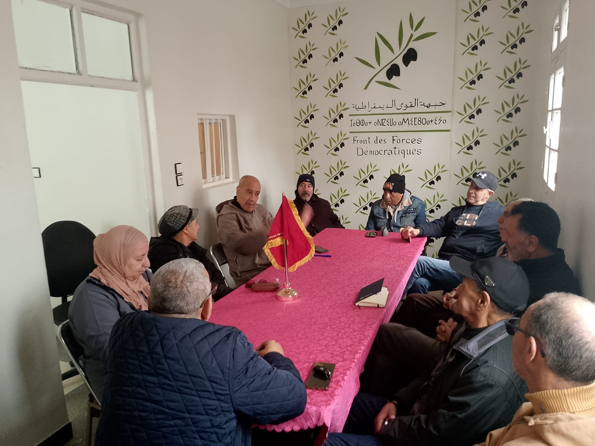
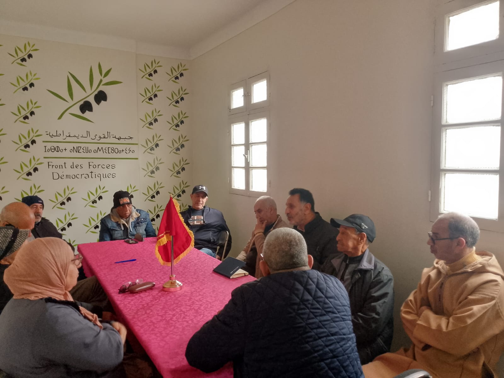

عقدت الأمانة الإقليمية لحزب جبهة القوى الديمقراطية بعمالة الفداء مرس السلطان اجتماعها التنظيمي في أجواء يسودها النقاش الجاد وروح المسؤولية.
افتتح الاجتماع بكلمة ترحيبية ألقاها الأستاذ خالد بهموت، حيث نوه بروح الالتزام والمسؤولية التي يتحلى بها مناضلو الحزب، مؤكدا على أهمية مثل هذه اللقاءات التنظيمية في تعزيز التواصل الداخلي وتقوية العمل الحزبي المشترك.
تمت مناقشة التحضيرات للمؤتمر أيام 26 و27 و28 من الشهر الجاري. وأكد الحاضرون على أهمية هذه المحطة في رسم معالم المرحلة المقبلة وفق رؤية تستجيب لتطلعات المناضلات والمناضلين، مع التشديد على ضرورة التعبئة الشاملة واللوجستيكية لإنجاح هذا الحدث الوطني.
ناقش الحاضرون ضرورة الاستعداد المبكر عبر تعزيز الحضور الميداني داخل مختلف الأحياء والإنصات لانشغالات المواطنين، والعمل على استقطاب طاقات وكفاءات جديدة قادرة على الإسهام في العمل السياسي بالمنطقة.
تم فتح باب النقاش لطرح مقترحات رامية لتطوير الأداء التنظيمي وتعزيز التنسيق بين مختلف الهياكل، مع التأكيد على انتظام هذه اللقاءات التواصلية لما لها من دور في تبادل الخبرات بين الأعضاء.
الأمانة الإقليمية - حزب جبهة القوى الديمقراطية